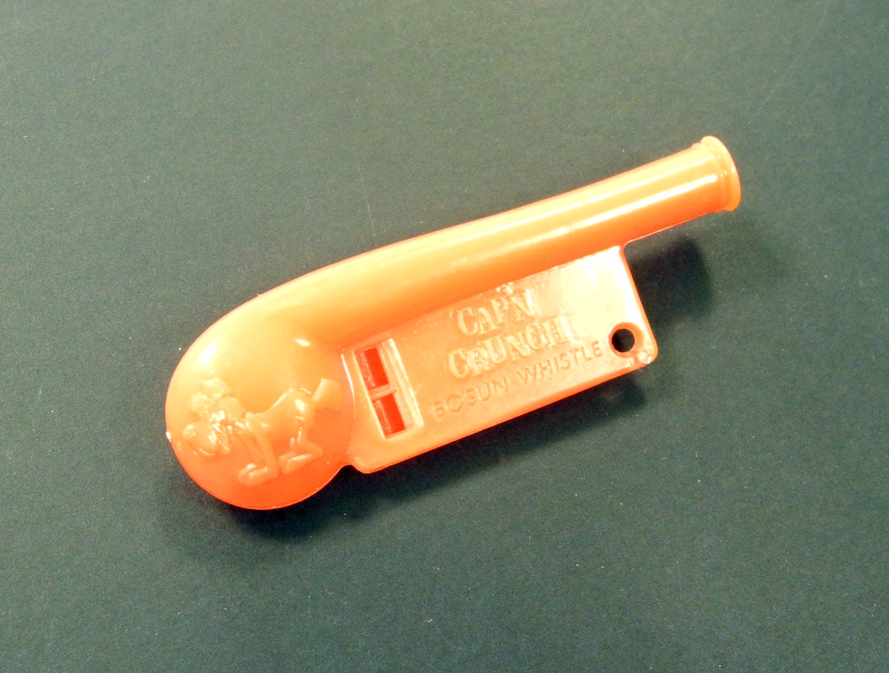

Organizzazione
Contents
1.2. Organizzazione#
1.2.1. Approccio#
Mi è sempre risultato facile apprendere nuovi concetti mettendoli in pratica in un contesto che potesse essere facilmente esplorato e controllato. Quando, anni fa, ho iniziato a insegnare, mi è sembrato naturale usare lo stesso approccio, adottando in modo inconsapevole un metodo didattico che solo più tardi ho scoperto essere codificato nella metodologia del learning by doing [Freire, 1982]. Questo libro cerca di seguire la stessa filosofia, introducendo fin da subito—ove possibile—i singoli argomenti all'interno di un contesto applicativo.
Per dare coerenza alla trattazione, ho deciso di collocare i vari esempi da affiancare alle parti più teoriche all'interno di uno stesso dominio. Il perimetro nel quale ho scelto di muovermi è il multiverso dei supereroi. Potrebbe sembrare un controsenso, vista la filosofia che ho appena dichiarato ed essendo i supereroi personaggi collocati in un ambito narrativo non reale (decisamente all'interno della fiction, peraltro). Poter applicare un concetto a un contesto, però, prescinde dall'effettiva realizzabilità fisica di quest'ultimo: serve solo specificare in modo chiaro, coerente e preciso le ipotesi che descrivono una data situazione. Questo permette di calarsi metaforicamente in questa stessa situazione, di modellarla tramite il linguaggio della matematica, di esplorarla utilizzando il metodo scientifico e, sperabilmente, di ricavare delle informazioni, di prendere delle decisioni e così via. Oltre a essere molto divertente, riferirsi a un mondo inesistente ha anche un altro vantaggio: permette a chi impara di non stabilire un collegamento diretto tra l'istanza di un problema e i metodi risolutivi da utilizzare, favorendo un apprendimento incentrato sull'uso critico di metodi e strumenti.
Nonostante mi sia imbarcato in questa impresa, non sono un esperto di supereroi. Chiedo quindi preventivamente scusa a chi ne sa più di me per tutte le imperfezioni e gli errori che potrei avere inserito, sperando che questi non pregiudichino la comprensione dei concetti e degli esempi descritti. Nonostante io sia un po' più esperto di analisi dei dati, di calcolo delle probabilità e di statistica, non posso escludere di avere fatto errori in generale, anche se in questo caso sono confidente di averne fatti pochi.
Il lavoro di scrittura è comunuque in progress, e verosimilmente lo sarà ancora per parecchio tempo: segnalatemi refusi ed errori, e più in generale esempi e materiale che pensate possano arricchire quanto ho scritto, tenendo presente che immagini, dati e così via possono essere pubblicati solo se sono coerenti con la licenza Creative Commons Attribuzione 4.0 Internazionale (CC BY 4.0) con la quale è distribuito questo libro.
1.2.2. Imparare e programmare#
Come descritto nel paragrafo precedente, i concetti vengono introdotti affiancandoli (o facendoli precedere) da esempi. Quando è possibile, vengono anche mostrate delle implementazioni utilizzando un linguaggio di programmazione. È quindi altamente consigliata una competenza di base sulla scrittura di software, utilizzando un linguaggio relativamente moderno: in particolare, farò riferimento a Python e al cosiddetto data science stack costituito dai package che sono ampiamente utilizzati, al tempo in cui scrivo, dalla comunità open source che fa riferimento all'analisi dei dati. Il Capitolo 2 contiene una descrizione a livello medio-alto delle funzionalità di Python che sono utilizzate, e può essere utilizzato da chi non conosce questo linguaggio per mettersi in pari. Una lettura di questo capitolo è comunque consigliata, al fine di familiarizzare con le convenzioni che utilizzo per scrivere codice.
Oltre che per essere letto sotto forma di pagine Web, questo libro è scritto utilizzando una tecnologia che ne permette la fruizione a diversi livelli, agendo sulle icone nel menu in alto a destra. In particolare, è possibile «attivare» le parti contenenti codice in modo da potere eseguire quest'ultimo, anche dopo averlo modificato, direttamente all'interno del libro. I singoli capitoli possono essere convertiti in notebook eseguibili usando il servizio online Binder, oppure direttamente scaricabili sul proprio computer al fine di eseguirli localmente. In quest'ultimo caso è necessario avere installato Python unitamente alle librerie utilizzate: il repository del libro contiene una descrizione di queste librerie e una possibile tecnica che permette di installarle in modo relativamente facile. Incoraggio tutti a usufruire di questa opportunità, non limitandosi a leggere passivamente il testo, e nemmeno a eseguire il codice in modo pedissequo, ma ad analizzarlo, comprenderlo, modificarlo (valgono anche le modifiche che permettono di capire meglio il codice!), insomma giocarci in un'ottica hacker (nel senso originale del termine 1).
Molto spesso cerco di guidare il lettore in una vera e propria implementazione degli strumenti fondamentali, soprattutto nella prima parte relativa alla statistica descrittiva. Il risultato non scende al livello delle librerie professionali: da una parte, lo scopo è quello di concentrarsi sugli aspetti fondamentali per facilitare l'apprendimento di uno o più concetti. Dall'altro, non ci si aspetta che ciò che viene realizzato sia poi utilizzato in ambito lavorativo: esattamente come è ragionevole che uno sviluppatore abbia imparato a scrivere da zero i principali algoritmi di ordinamento (e, se dovesse servire, sia in grado di farlo), ma che faccia in seguito riferimento alle loro implementazioni in una libreria, ottimizzate e validate sicuramente meglio di quanto il singolo può ragionevolmente fare da solo. In quest'ottica, subito dopo le implementazioni «fai da te» i lettori sono indirizzati all'uso di librerie allo stato dell'arte.
In linea di principio, anche chi non sa programmare gli elaboratori può leggere questo libro, saltando semplicemente le parti che contengono, descrivono e discutono il codice. Ma in questo caso è opportuno valutare bene il rischio di non apprendere i contenuti in modo ottimale, tenuto conto del fatto che buona parte del libro è stata scritta alternando testo e codice. A questo tipo di lettori consiglio di prendere in considerazione testi scritti usando un approccio più tradizionale, come per esempio:
Probabilità e Statistica per le scienze e l'ingegneria, di Sheldon Ross [Ross, 2015],
Introduzione alla statistica di Marylin K. Pelosi, Theresa M. Sandifer, Paola Cerchiello e Paolo Giudici [Pelosi et al., 2009].
Va anche messo in guardia chi non sa programmare e si trova davanti alla tentazione di leggere questo libro per apprendere a farlo, magari mentre in contemporanea impara ad analizzare dati. Questo non è un libro per imparare a programmare, ma piuttosto un libro per imparare e programmare, usando la capacità di scrivere codice per arricchire il processo di apprendimento di un'altra materia. Si dice che non si è veramente capita una cosa se non si è in grado di spiegarla alla propria nonna 2: faccio mia questa massima, sperando di non distorcerla troppo dicendo che non si è veramente capito un concetto tecnico se non si è in grado di implementarlo scrivendo un programma. Se si vuole però seguire questa filosofia, bisogna già avere imparato a scrivere software, e questa è una competenza che richiede tempo, energia e del materiale dedicato all'apprendimento della materia. Anche in questo caso, ci sono parecchi libri che possono essere utilizzati con profitto, per esempio:
Pensare in Python, di Allen B. Downey.
Programmazione in C, di Kim N. King [King, 2009],
Programmare in Go, di Ivo Balbaert [Balbaert, 2020].
Ho volutamente messo nell'elenco precedente tre volumi più o meno recenti, e soprattutto ognuno dedicato a un linguaggio diverso: lo scopo, in questo caso, è infatti quello di imparare le basi della programmazione e non i dettagli di un linguaggio specifico. Infine, questo paragrafo fa riferimento solamente a libri scritti in italiano, ma è sempre da considerare la possibilità di studiare sulla versione originale di un libro quando questa è scritta in inglese, o quando esiste una versione in inglese specificamente concepita per studenti di madre lingua non inglese.
1.2.3. Convenzioni#
Per quanto detto nel paragrafo precedente, spesso risulterà
necessario inframmezzare il testo principale con del codice,
non al fine di eseguirlo ma per scopo illustrativo (per esempio per indicare
i letterali true e false per il tipo di dati bool). In questo caso il
codice viene indicato utilizzando un carattere tipografico non proporzionale
(Fira Code) che sfrutta le cosiddette legature per abbellire il modo in cui
vengono visualizzati alcuni elementi del linguaggio di programmazione.
Per esempio, l'operatore logico di «maggiore o uguale» è descritto dalla
sequenza dei due simboli
>=,
che una volta digitata viene automaticamente convertita nel simbolo >=, più
simile a quello utilizzato in ambito matematico.
Quando invece è necessario mostrare una o più righe di codice intese per essere eseguite, queste verranno organizzate in una cella di codice all'interno di un notebook, visualizzata nel modo che segue.
print(age <= 42)
Di norma, l'esito dell'esecuzione di codice sarà visualizzato all'interno di un'apposita cella di output, accodata a quella di codice e mostrata come di seguito.
True
Va notato come le celle di output siano leggermente diverse da quelle di codice, in quanto queste ultime hanno il bordo sinistro evidenziato con un colore diverso. Questa convenzione è leggermente diversa da quella utilizzata normalmente nei notebook, in cui il colore delle celle di codice cambia quando queste vengono selezionate per eseguirle o per modificarne i contenuti.
Nomenclatura
Questo tipo di area contiene delle note relative alla nomenclatura utilizzata in un particolare ambito, o alla descrizione di diciture alternative rispetto a quelle introdotte.
Definizione 1.1 (Definizione)
In questa area vengono definiti in modo formale uno o più concetti.
Esempio 1.1 (Esempio)
Questa area racchiude un esempio.
Teorema 1.1
Questa area contiene la tesi di un teorema.
Dimostrazione. In questa area viene inserita la dimostrazione di un teorema.
Corollario 1.1
Questa area contiene la definizione di un corollario e la sua dimostrazione.
1.2.4. Notazione#
La Tabella 1.1 elenca le principali notazioni utilizzate nel testo.
Simbolo |
Significato |
|---|---|
\(\mathbb N\) |
insieme dei numeri naturali |
\(\mathbb R\) |
insieme dei numeri reali |
\(A = \{ a_1, \dots a_n \}\) |
insieme/evento composto dagli elementi/esiti \(a_1, \dots, a_n\) |
\(a \in A\) |
elemento \(a\) dell'insieme \(A\) |
\((a_1, \dots, a_n)\) |
disposizione o permutazione composta dagli elementi \(a_1, \dots, a_n\) |
\(n!\) |
fattoriale del numero intero \(n\) |
\(\binom{n}{k}\) |
coefficiente binomiale («\(n\) su \(k\)») di \(n\) oggetti in \(k\) posti |
\(p_n\) |
numero di permutazioni semplici di \(n\) elementi |
\(P_{n; n_1, \dots, n_k}\) |
numero di permutazioni con ripetizione di \(n\) elementi distinguibili a gruppi contenenti \(n_1, \dots, n_k\) oggetti |
\(\{ a_1, \dots, a_n \}\) |
combinazione composta dagli elementi \(a_1, \dots, a_n\) |
\(D_{n, k}\) |
disposizioni con ripetizione di \(n\) oggetti in \(k\) posti |
\(d_{n, k}\) |
disposizioni senza ripetizione di \(n\) oggetti in \(k\) posti |
\(c_{n, k}\) |
combinazioni semplici di \(n\) oggetti in \(k\) posti |
\(C_{n, k}\) |
combinazioni con ripetizione di \(n\) oggetti in \(k\) posti |
\(S \subseteq T\) |
sottoinsieme/sottoevento \(S\) di un insieme/evento \(T\) |
\(\Omega\) |
insieme universo / spazio degli esiti |
\(A \rightarrow B\) |
evento/proposizione \(A\) implica evento/proposizione \(B\) |
\(A \leftrightarrow B\) |
evento/proposizione \(A\) coimplica evento/proposizione \(B\) |
\(S \cup T\) |
unione degli insiemi/eventi \(S\) e \(T\) |
\(S \cap T\) |
intersezione degli insiemi/eventi \(S\) e \(T\) |
\(S \backslash T\) |
differenza tra l'insieme/evento \(S\) e l'insieme/evento \(T\) |
\(S \ominus T\) |
differenza simmetrica tra gli insiemi/eventi \(S\) e \(T\) |
\(A \vee B\) |
disgiunzione logica tra le proposizioni \(A\) e \(B\) |
\(A \wedge B\) |
congiunzione logica tra le proposizioni \(A\) e \(B\) |
\(\mathscr E\) |
esperimento casuale |
\(\omega \in \Omega\) |
esito di un esperimento casuale |
\(\{ \omega \}\) |
evento elementare |
\(\mathsf A\) |
algebra degli eventi |
\(2^A\) |
insieme delle parti dell'insieme \(A\) |
\(\mathbb P\) |
funzione di probabilità |
\(\mathbb P(E)\) |
probabilità dell'evento \(E\) |
\(\mathbb P(E|F)\) |
probabilità condizionata dell'evento \(E\) dato l'evento \(F\) |
\(\mathbb E(X)\) |
valore atteso della variabile aleatoria \(X\) |
\(\mathbb E(g(X))\) |
valore atteso della funzione \(g\) della variabile aleatoria \(X\) |
\(\mathbb E(g(X, Y))\) |
valore atteso della funzione \(g\) delle variabili aleatorie \(X\) e \(Y\) |
\(a \triangleq b\) |
\(a\) è definito come uguale a \(b\) |
1.2.5. Utilizzo all'interno di un insegnamento#
Questo libro nasce dall'evoluzione di una serie di dispense che ho utilizzato negli ultimi anni a corredo dei libri di testo che ho adottato per l'insegnamento di «Statistica e analisi dei dati» per il corso di Laurea in Informatica erogato dall'Università degli Studi di Milano. Queste dispense trattavano sia gli aspetti più computazionali delle lezioni, dunque quelle direttamente incentrate sulla comprensione e sulla scrittura di codice, sia alcuni argomenti che non trovano posto nella trattazione fatta nei libri di testo che avevo adottato.
Nei corsi di Laurea in area informatica, l'insegnamento delle tematiche alla base dell'analisi dei dati è tipicamente affidato a un unico insegnamento fondamentale del secondo anno, nel quale si abbracciano sia gli aspetti teorici del calcolo della probabilità e della statistica matematica, sia quelli più pratici legati alla statistica descrittiva. Risulta quindi difficile reperire materiale bibliografico, perché queste discipline sono spesso oggetto di insegnamenti differenti nell'ambito, per esempio, dei corsi in area matematica. Coerentemente, il panorama dei libri di testo vede spesso ottimi volumi, ma dedicati a una sola di queste discipline, o opere che focalizzano l'interesse su una di esse, sacrificando la trattazione delle altre. Non sono invece ancora riuscito a trovare un libro di testo che desse a queste tre aree il peso relativo che io assegno loro nelle mie lezioni.
È per questo motivo che ho deciso, via via che la «massa critica» delle dispense cresceva, di scrivere un libro che evitasse l'adozione di due diversi testi da affiancare in ogni caso a dispense che colmassero le lacune risultanti.
La trattazione è organizzata secondo il filo logico che seguo durante le mie lezioni. Nella prima parte, dedicata all'analisi dei dati nel senso più pratico del termine, introduco i principali argomenti della statistica descrittiva e i relativi strumenti nell'ottica di un loro utilizzo diretto, scrivendo codice Python e analizzando un dataset di riferimento. Segue una parte sul calcolo delle probabilità, dedicata a esporre i principali concetti legati alla modellazione dell'incertezza in senso probabilistico, nella quale cerco di mantenere al minimo necessario l'uso del formalismo matematico. L'ultima parte è invece concentrata ad accennare alle basi della statistica inferenziale, focalizzandosi sull'inferenza parametrica.

Fig. 1.2 Un fischietto Cap’n Crunch Bo’sun (immagine del Heinz Nixdorf MuseumsForum, distribuita sotto licenza CC BY-NC-SA 4.0)#
- 1
Il termine hacker viene oggigiorno utilizzato nel linguaggio comune dandogli un'accezione negativa che essenzialmente lo accomuna a chi persegue intenti dolosi scrivendo o modifcando software, o in generale sfruttando delle falle di sicurezza al fine di utilizzare in modo improprio delle tecnologie esistenti. In realtà, l'uso di questo termine nell'inglese moderno si fa risalire introdotto intorno al 1960, conferendogli però un'accezione più neutra: quella di indicare una persona con il talento di comprendere in profondità il funzionamento di un sistema, e quindi di essere in grado di controllarlo al punto di utilizzarlo in modo diverso rispetto a quello per cui era stato progettato. Tutto questo avveniva all'interno del Massachusetts Institute of Technology (MIT), ma si è focalizzato sui computer e in generale sull'informatica solo in un secondo tempo. Giusto per citare un esempio famoso, uno dei primi hack (illegale, peraltro) riguardava l'uso del Cap’n Crunch Bo’sun Whistle (un fischietto che si trovava in regalo nelle scatole di una famosa marca di cereali, mostrato in Fig. 1.2) per fare telefonate interurbane o internazionali gratuite con alcuni telefoni pubblici. Analogamente, la prima traccia scritta del termine «hacking» viene fatta risalire al verbale di una riunione del 1955 del Tech Model Railroad Club, che riuniva studenti del MIT appassionati di modellismo ferroviario.
- 2
Risulta complicato risalire all'autore di questa massima: c'è chi la attribuisce ad Einstein, chi a Feynmann e chi a Rutherford (pare dunque che ci sia consenso sul contesto delle scienze fisiche); ci sono anche varianti in cui la nonna è sostituita da un bambino, o perfino da un barista.